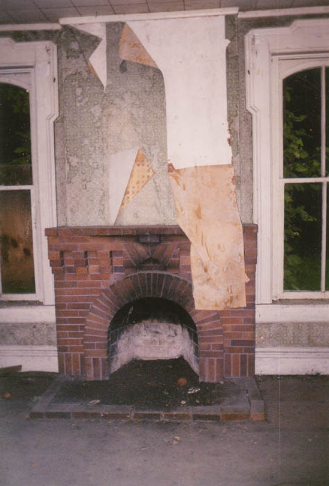
The Sidwell House stood wide open when we visited it one late-summer evening. Both the basement access and the back doors were open, and in some cases completely gone. So apparently either the Sidwell family isn't terribly militant about keeping people out, or they don't have much problem with it.
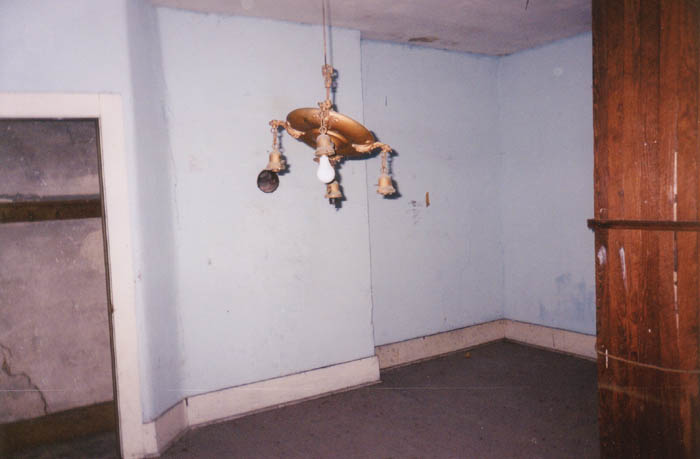
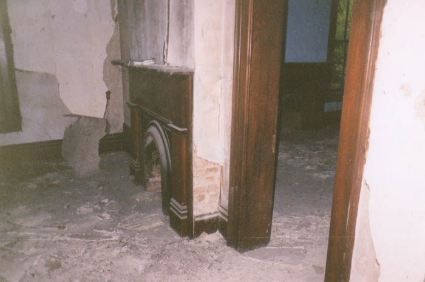
The house is largely barren of signs of life--especially furniture--but you will find the occasional light and plumbing fixture. Most of these are completely intact. There is also no noticeable spraypaint or graffiti on the walls of this abandoned house, and the vast majority of the windows remain unbroken. If it's been abandoned as long as people say, then this is amazing. Maybe it's the house's location that makes it hard to get to. Of course we may not have noticed some damage; the closeness of the highway forced us to check out the house in almost total darkness.
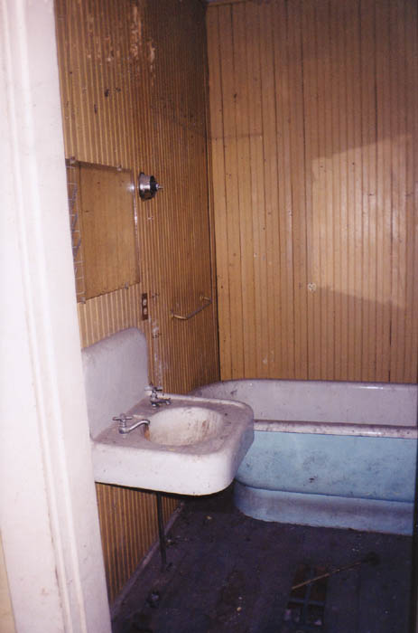
It is an astonishingly nice house. Aside from the bay windows and spacious first floor, it has two more floors and at least six bedrooms. The front door opens into a wide front hall with doors on both sides. The main staircase is still there and still sturdy enough to climb, but it seems dangerous because the side railing has fallen completely off.
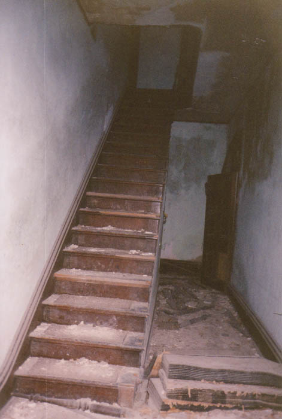
The second floor is all bedrooms and a nice center hallway with a big window facing the front lawn. Each bedroom has a built-in closet and the one above the living room has its own fireplace. The picture following, it's been pointed out to me, contains a number of "orbs." Ghosts or dust motes? A common lens error, maybe? I'm not convinced about the spirits-orbs connection, but I suppose it's possible.
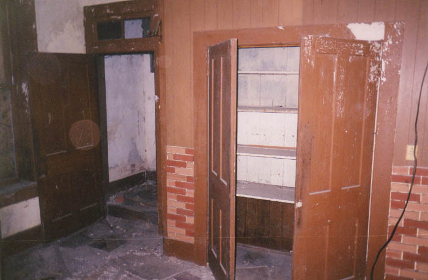
The third floor is sort of an attic but could also be used for bedrooms, especially since its accessible via the main staircase and not through a trapdoor in some closet ceiling. You can see the top third-floor hallway, as well as one of the attic rooms, pictured below.
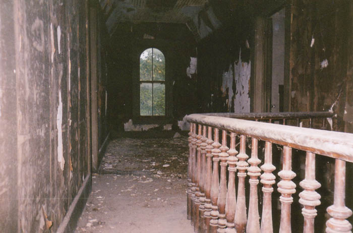
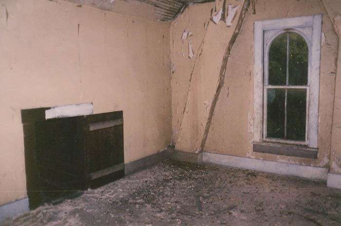
And then there's the basement, which is of course dirty and weird, with a low ceiling and a number of rooms. We had to stoop over to get around down here. The outside bay doors lead down the basement, or you can go down a narrow flight of stairs from a room behind the kitchen.
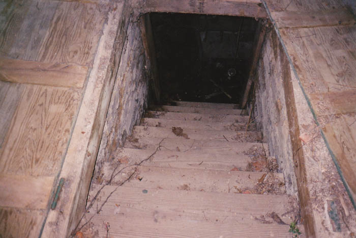
Nothing much down here but wet stone walls and short picket gates that serve as doors. And spiders, I'm sure, although I kept my eyes closed whenever I thought I saw one.
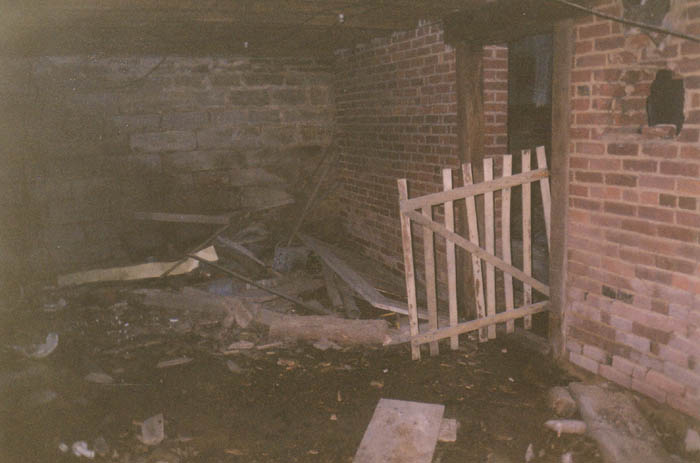
This is where we expected to see a ghost, because it's such a sinister place. Even when a house is occupied the crawlspace/basement is always pretty scary. But we didn't see anything worse than the giant, evil central heating furnace with its many tentacle-like ducts.
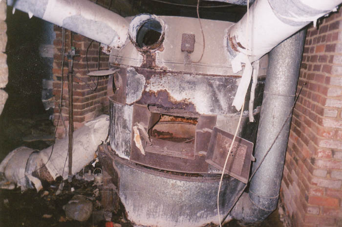
One of the legends we were able to conclusively debunk is that there are blood stains on the walls. We saw nothing like this--no big ones, anyway. And we didn't see any ghosts, although we gave them an ample opportunity to manifest themselves. As far as I know the Sidwell House is still standing abandoned at 22 and 93 in Avondale, Ohio. Take a look at it sometime and let me know if you have any more luck than we did with the ghosts of the murdered family.
Back